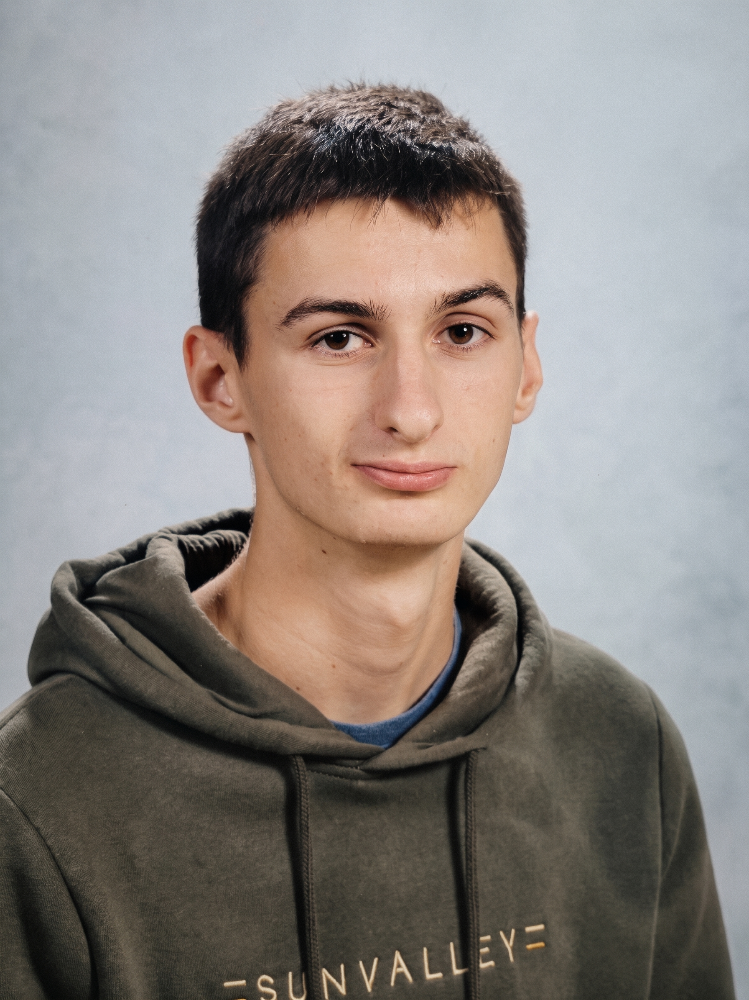

Baptiste Sauvêtre
Computer Science Engineering Student
Étudiant Ingénieur en Informatique
As an engineering student at ENSEEIHT wishing to specialize in cybersecurity, I am passionate about understanding and protecting digital infrastructures.
Actuellement étudiant ingénieur à l'ENSEEIHT souhaitant se spécialiser en cybersécurité, je me passionne pour la compréhension et la protection des infrastructures numériques.

Engineering Course
Formation d'Ingénieur
Current Academic Focus
Parcours Académique Actuel
Currently building a strong foundation in computer science and mathematics. My first semester course focuses on algorithmic logic and systems architecture, with practical application in Ada, C, and Matlab, as well as mastering professional development tools like Git and Linux environment.
Acquisition de bases solides en informatique et en mathématiques. Le premier semestre se concentre sur la logique algorithmique et l'architecture des systèmes, avec une mise en pratique en Ada, C et Matlab, ainsi que sur la maîtrise des outils de développement professionnels tels que Git et l'environnement Linux.
Projects
Projets

TIPE: Cellular Automata Simulation
TIPE : Simulation d'Automates Cellulaires
Theoretical computer science project completed in a two-person team. The objective was to discover evolution rules that lead a system to a stable state from a fixed starting pattern.
We developed a cellular automata simulator in C, optimizing the data structure with quadtrees, and implemented a backtracking algorithm to systematically explore the rule space.
Projet d'informatique théorique réalisé en binôme. L'objectif était de rechercher des règles d'évolution menant le système vers un état stable à partir d'un motif initial fixe.
Nous avons développé en C un simulateur d'automates cellulaires, en optimisant la structure des données à l'aide d'arbres quaternaires (quadtrees), et implémenté un algorithme de retour sur trace (backtracking) pour explorer l'espace des règles.
International Mobility
Mobilité Internationale
As part of my final year, I am planning an academic exchange to an English-speaking tech hub in North America to deepen my expertise in cybersecurity, experience a new academic culture, and achieve professional bilingualism.
Dans le cadre de ma dernière année, je prévois un échange académique dans un pôle technologique anglophone en Amérique du Nord afin d'approfondir mon expertise en cybersécurité, de découvrir une nouvelle culture académique et d'atteindre un bilinguisme professionnel.
Language Proficiency
Niveau de Langues
- English: Level B2+
- German: Level B1
- Chinese: Level A1
- Anglais : Niveau B2+
- Allemand : Niveau B1
- Chinois : Niveau A1
Concordia University
Université Concordia
Montreal, Canada
Montreal is one of North America's leading hubs for artificial intelligence and cybersecurity. Studying at Concordia University would allow me to take advanced courses in network security while immersing myself in a dynamic, bilingual tech ecosystem.
Montréal est l'un des principaux pôles d'intelligence artificielle et de cybersécurité en Amérique du Nord. Étudier à l'Université Concordia me permettrait de suivre des cours avancés en sécurité des réseaux tout en m'immergeant dans un écosystème technologique dynamique et bilingue.
Illinois Institute of Technology
Illinois Institute of Technology
Chicago, USA
IIT is renowned for its applied tech programs and strong industry connections in the US. An exchange here would provide hands-on experience in digital infrastructure defense and exposure to American methodologies in computer science and enterprise security.
L'IIT est réputé pour ses programmes technologiques appliqués et ses liens étroits avec l'industrie américaine. Un échange là-bas m'offrirait une expérience pratique de la défense des infrastructures numériques et une exposition aux méthodologies américaines en informatique et sécurité des entreprises.
Georgia Institute of Technology
Georgia Institute of Technology
Atlanta, USA
As a top-tier engineering institution, Georgia Tech represents the pinnacle of computer science research. A mobility project here would be highly aspirational, allowing me to study under leading experts in information security and cryptography.
En tant qu'institution d'ingénierie de premier plan, Georgia Tech représente le summum de la recherche en informatique. Un projet de mobilité ici serait ambitieux et me permettrait d'étudier avec des experts de pointe en sécurité de l'information et en cryptographie.
Sustainability & Civic Engagement
Développement Durable & Engagement Citoyen
Community Leadership: Volunteer Climbing Instructor
Engagement Associatif : Initiateur Escalade Bénévole
As an active member and volunteer at my climbing club for over 10 years, I have regularly contributed to the community's operations, ranging from event organization to logistics (such as dismantling walls and belaying during competitions). During my first year at ENSEEIHT, I had the opportunity to complete the Artificial Climbing Wall Instructor (Initiateur SAE) training. This role has allowed me to supervise groups of beginners and ensure their safety on the wall, thereby strengthening my instructional skills, leadership, and sense of responsibility.
Membre actif et bénévole au sein de mon club d'escalade depuis plus de 10 ans, je me suis régulièrement investi dans la vie associative, de l'organisation d'événements à la logistique (démontage du mur, assurage en compétition). Dès ma première année à l'ENSEEIHT, j'ai eu l'opportunité de suivre la formation d'Initiateur SAE (Structure Artificielle d'Escalade). Ce rôle m'a permis d'encadrer des groupes de débutants et de garantir leur sécurité sur le mur, renforçant ainsi mes compétences pédagogiques, mon leadership et mon sens des responsabilités.
The Climate Fresk Workshop
Atelier Fresque du Climat
During my first year at ENSEEIHT, I collaborated with a team of students in a "Climate Fresk" workshop. This interactive session significantly deepened my awareness of contemporary climate challenges and highlighted the critical environmental responsibilities we must shoulder as future engineers.
Dès ma première année à l'ENSEEIHT, j'ai participé à un atelier en équipe, "la Fresque du Climat". Cette expérience m'a permis de prendre pleinement conscience des enjeux climatiques actuels et des responsabilités environnementales que nous devrons porter en tant que futurs ingénieurs.
"The Trial of King Kong" Interactive Play
Pièce Interactive "Le Procès de King Kong"
Also in my first year, I attended and actively participated in "The Trial of King Kong." This thought-provoking interactive theater piece addressed the topics of gender-based and sexual violence (GBV/VSS), shedding light on its consequences and the importance of fostering a safe, respectful environment on campus and in the workplace.
J'ai également assisté et participé à la pièce de théâtre interactive "Le Procès de King Kong", traitant des violences sexistes et sexuelles (VSS). Cet atelier de sensibilisation nous a confrontés aux conséquences de ces agissements et à l'importance de maintenir un environnement respectueux.
"Futur Proche" Festival
Festival "Futur Proche"
Through ENSEEIHT and Toulouse university network, I took part in the "Futur Proche" (Near Future) festival. By engaging with a variety of conferences, workshops, and presentations, I gained valuable scientific perspectives on climate issues. The festival specifically focused on how current and emerging technological innovations can be leveraged to tackle these global challenges.
À travers l'ENSEEIHT et les universités toulousaines, j'ai participé au festival "Futur Proche". Les conférences et ateliers m'ont permis de mieux appréhender les défis climatiques sous un angle scientifique et de découvrir des innovations technologiques en développement.
Sport & Other Activities
Sports & Autres Activités
🧗♂️ Sport Climbing
🧗♂️ Escalade
Dedicated climber for 12 years. I have competed extensively at the departmental and regional levels, and was selected for the departmental team. This practice has developed my discipline, problem-solving skills under pressure, and physical endurance.
Pratique passionnée de l'escalade depuis 12 ans. J'ai participé à de nombreuses compétitions aux niveaux départemental et régional, et j'ai intégré l'équipe départementale. Cette pratique de compétition m'a permis de développer ma rigueur, la gestion de la pression et le dépassement de soi.
🎹 Music
🎹 Musique
Self-taught pianist for the past two years, which fuels my creativity, patience, and perseverance outside of academic studies.
Pianiste autodidacte depuis 2 ans, développant créativité, patience et persévérance au quotidien.
Career Development
Projet Professionnel (PEP)
Unique Value Proposition (UVP)
Vidéo Pitch (UVP)
[ Placeholder: Insert your 2-3 minute UVP video link or embed here ]
[ Emplacement réservé à votre vidéo pitch de 2-3 minutes en anglais ]
Role Model Analysis
Analyse des Profils de Référence
[ Placeholder: Insert your analysis of 3 professional role models here ]
[ Emplacement réservé à l'analyse de vos 3 profils de référence ]